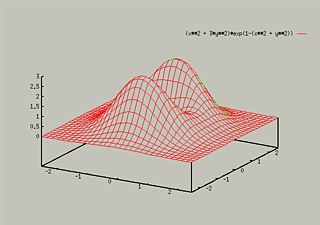
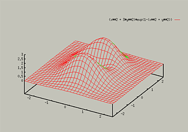
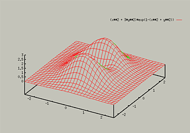
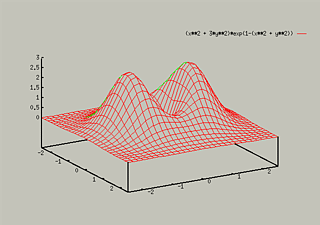
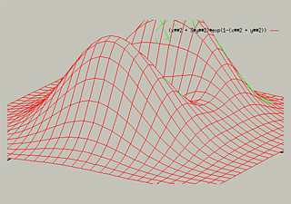

Many times, you will want to change the view of a graph. To do this,
you need to use the set view command. This command is fairly
unwieldy. The syntax for the command is one of the following:
- set view horizontal_angle,vertical_angle
- set view horizontal_angle,vertical_angle,zoom
- set view ,,zoom
The first argument is the angle between the viewpoint and the
horizontal axis of the screen. The second is the angle between the
axis perpendicular to the screen. The third number if the zoom factor.
The default values are 60, 30, 1. To change back to the default view,
type:
For instance, to see how changing the horizontal angle changes the
graph,consider the following:
- set hidden3d
- set isosamples 30
- splot [-2.5:2.5] [-2.5:2.5] (x**2 + 3*y**2)*exp(1-(x**2 + y**2))

 

To see what happens when you change the vertical angle, consider
the following:
- set view 60,30
- splot [-2.5:2.5] [-2.5:2.5] (x**2 + 3*y**2)*exp(1-(x**2 + y**2))


To see an example of zooming, consider
- set view 60,30
- set view ,,2
- replot

Table of Contents - Previous - Adding Contour Lines - Next - Parametric Plots
College of Natural Sciences /
University of Northern Iowa /
manager@cns.uni.edu
Copyright © 1996 College of Natural Sciences. All Rights Reserved.
Last Modified: 10/29/96